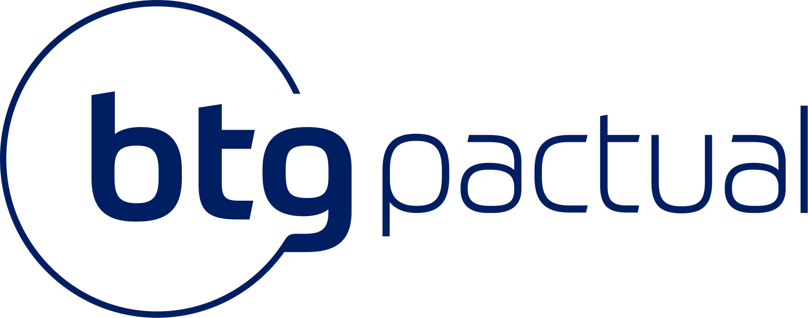

Semillero de investigación · Universidad EAFIT
Ampliamos el alcance de las finanzas.
Investigamos cómo las decisiones financieras transforman personas, organizaciones y mercados. Convertimos preguntas rigurosas en conocimiento que se puede aplicar y compartir.
Personas
Organizaciones
Mercados
01 Nuestro campo de observación
SCOPE en perspectiva
Una comunidad que deja evidencia.
Una lectura rápida de la trayectoria, la comunidad y la producción investigativa de SCOPE.
* Proyectos documentados y producción académica identificada; cifras sujetas a actualización
El alcance continúa
Dónde están construyendo nuestros integrantes.
Organizaciones en las que integrantes y antiguos integrantes de SCOPE están desarrollando su trayectoria profesional.



Red SCOPE
Trayectorias que conectan la investigación con organizaciones líderes.
El nombre es una declaración
SCOPE es la capacidad de ver más lejos y actuar con método.
Alcance.
Ampliamos la mirada sobre las finanzas, conectando teoría, datos y problemas reales del entorno.
Acción.
No solo hacemos preguntas: diseñamos, ejecutamos y divulgamos proyectos con precisión.
Crecimiento.
Cada generación fortalece una comunidad con identidad, estructura y vocación investigativa.
02 Quiénes somos
Una nueva etapa, la misma convicción
Investigación formativa con dirección al mundo financiero.
SCOPE es el Semillero de Investigación de Economía y Finanzas para las Organizaciones de la Universidad EAFIT. Somos estudiantes que desarrollan habilidades y conocimiento mediante investigación, formación y conversación interdisciplinaria.
“Entender las finanzas es aprender a leer las decisiones que mueven el mundo.”SCOPE · Economía & Finanzas Organizacionales
Lo que investigamos
Cinco líneas. Un mismo propósito.
Estudiamos problemas financieros desde distintas escalas para formular preguntas relevantes y construir respuestas con evidencia.
01 / 05
Finanzas corporativas
Decisiones de inversión, financiación y gobierno que determinan cómo una organización crea y sostiene valor.
- Fusiones y adquisiciones
- Estructura de capital
- Crecimiento y desempeño empresarial
- Género en juntas directivas
Preguntas que nos mueven
¿Cómo influye la participación de mujeres en juntas directivas sobre el desempeño financiero?
¿Cómo se construye y gestiona un portafolio de instrumentos de inversión?
¿Qué relación existe entre educación financiera, bienestar y calidad de vida?
Cómo trabajamos
De la pregunta al impacto.
El método convierte la curiosidad en un proceso compartido, trazable y comunicable.
- 01
Examinar
Observamos el entorno y formulamos problemas relevantes para la investigación financiera.
- 02
Proponer
Seleccionamos marcos, datos y metodologías apropiadas para construir una respuesta.
- 03
Aplicar
Ejecutamos análisis, contrastamos resultados y conectamos la teoría con situaciones reales.
- 04
Divulgar
Compartimos hallazgos en espacios académicos, formativos y de conversación pública.
Visión global · Identidad propia
Un semillero preparado para crecer con cada generación.
Las comunidades financieras universitarias más sólidas conectan formación estructurada, trabajo aplicado, publicaciones, industria y redes de egresados. SCOPE traduce esas prácticas a su vocación investigativa en EAFIT.
Una hoja de ruta para ampliar el alcance sin perder el rigor.Aprendizaje por niveles
Una ruta que lleve de los fundamentos financieros a las herramientas de análisis y la formulación de proyectos.
Fundamentos → herramientas → investigaciónCélulas de investigación
Equipos organizados por línea, acompañados por mentores y orientados a producir un resultado concreto.
Pregunta → evidencia → entregableIdeas que se comparten
Notas, presentaciones, visualizaciones y trabajos que hagan visible el conocimiento producido por los integrantes.
Análisis → edición → divulgaciónConversaciones de frontera
Encuentros con profesores, graduados y profesionales para conectar la investigación con decisiones del mundo real.
Academia ↔ organizacionesContinuidad entre generaciones
Documentación, mentoría y red de antiguos integrantes para que cada cohorte avance desde lo ya construido.
Memoria → mentoría → crecimientoLaboratorio SCOPE · 01
El crecimiento se entiende mejor cuando puedes mover las variables.
Explora cómo cambia un capital bajo interés simple y compuesto. Es una demostración educativa: no constituye una proyección de inversión.
Resultado estimado4,0×
Interés simple$2.500.000
Interés compuesto$4.045.558
El compuesto genera rendimientos sobre el capital y sobre los rendimientos acumulados.
La experiencia SCOPE
Aprender haciendo, junto a otros.
El semillero complementa la formación de pregrado con espacios para profundizar, preguntar, producir y conectar.
Investigación formativa
Participa en proyectos, aprende a plantear problemas y fortalece tu capacidad de analizar evidencia.
Talleres y conferencias
Conoce herramientas, metodologías y perspectivas de profesores, estudiantes e invitados.
Producción académica
Construye resultados susceptibles de convertirse en ponencias, presentaciones y publicaciones.
Comunidad y conexiones
Encuentra personas que comparten preguntas e intereses sobre economía, finanzas y organizaciones.
SCOPE en Instagram
La investigación continúa en tu feed.
Sigue al semillero para conocer nuestros proyectos, eventos, convocatorias e ideas sobre economía y finanzas.
Coordinación
Un semillero se construye en comunidad.
La coordinación académica y estudiantil acompaña el proceso investigativo y el crecimiento de cada generación.
David Alejandro Yepes Raigosa
dyepesr@eafit.edu.coSamuel Gómez Villero
smgomezv1@eafit.edu.coJerónimo Hoyos Osorio
jhoyoso2@eafit.edu.coPróxima generación
Tu próxima gran pregunta puede empezar aquí.
Si estudias en EAFIT, te interesan las finanzas y quieres aprender a investigar con otros, sigue las convocatorias de SCOPE.
- 01
Conoce el semillero. Explora nuestras líneas y el tipo de preguntas que trabajamos.
- 02
Sigue la convocatoria. Encuentra fechas y requisitos en nuestros canales oficiales.
- 03
Da el primer paso. Comparte tu motivación y disposición para aprender, investigar y aportar.
Preguntas frecuentes
Antes de aplicar.
¿Necesito experiencia previa en investigación?＋
No. SCOPE es un espacio de investigación formativa. Lo fundamental es la curiosidad, la disposición para aprender y el compromiso con el trabajo del semillero.
¿Qué temas puedo explorar?＋
Finanzas corporativas, mercados financieros, banca e instituciones, ingeniería y riesgos financieros y finanzas personales, además de cruces entre estas áreas.
¿Cómo sé cuándo abre la convocatoria?＋
Las novedades y convocatorias se comunican por los canales oficiales de SCOPE, especialmente en Instagram.
¿Qué actividades realiza el semillero?＋
Investigaciones, talleres, conferencias, reuniones de formación y actividades de divulgación que permiten profundizar en el campo financiero.